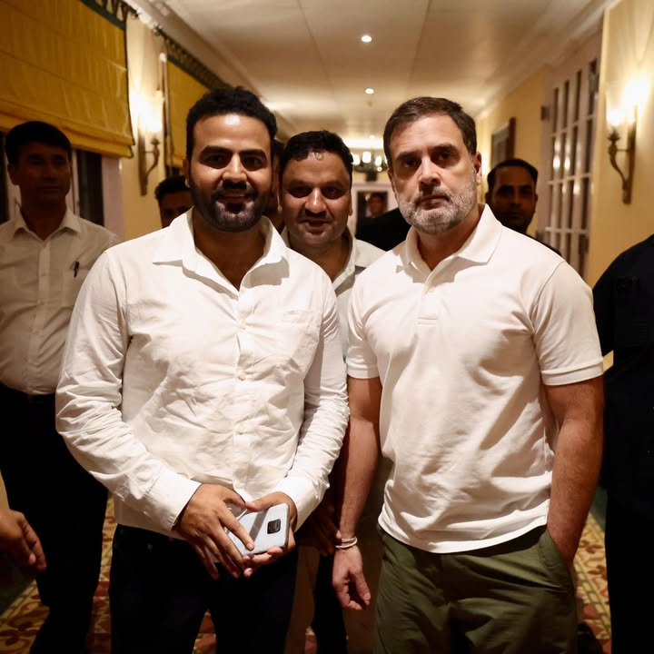

Origin
Sogam, Lolab
Chairman, Rajiv Gandhi Panchayati Raj Organization
Jammu & Kashmir
A brand Lolab trusts — his transformative journey from a party boy to a desi boy.
Social activist, NGO founder, and Chairman of RGPRS J&K — working for strong Panchayati Raj institutions, grassroots democracy, and steadfast solidarity with the people of Lolab and Jammu & Kashmir.

Sogam, Lolab
2018
Chairman, RGPRS J&K
Youngest RGPRS Chairman (India)
Kupwara, J&K — social activist, engineer, and grassroots leader from Sogam Lolab.
In the picturesque district of Kupwara, a beacon of hope emerged in 2018 in the form of Er. Mudasir Lolabi — a dynamic social activist, NGO founder, and now Chairman of the Rajiv Gandhi Panchayati Raj Organization (RGPRS) for Jammu & Kashmir under the Indian National Congress. Hailing from Sogam Lolab, his journey is marked by a deep commitment to addressing the common issues faced by the local community.
Mudasir's early life was a blend of academic excellence and a passion for Bollywood and travelling across the country and the world. However, his trajectory took a poignant turn when a family tragedy altered his course. The loss of his elder brother in a tragic accident in Lolab while returning from his duties in Macchil prompted Mudasir to redirect his focus towards his hometown with a burning desire to make a positive impact on society.
In 2018, he took a bold step by founding an NGO, motivated by a genuine concern for destitute families in Lolab. Through a unique and proactive approach — sharing from his own pocket and collaborating with his team — he quickly garnered trust and support from the local community. Though tempted by political opportunities, Mudasir remains dedicated to grassroots activism, earning him the moniker of a "Star" in Lolab.
Addressing scepticism about his time spent outside Lolab, Mudasir emphasised his family's noble reputation and his personal commitment to charity. Sharing from his own pocket and collaborating with his team, he built a foundation of trust that solidified over time.
Today, Er. Mudasir stands as a popular figure among citizens not only in Lolab but across Kashmir. People of Lolab have urged him to participate in elections and even held demonstrations asking him to contest — a testament to the trust he has earned. He is considered one of the most loyal Congress workers and is strengthening the party at the grassroots level. Due to his utmost dedication and selfless service, the Congress high command appointed him Chairman of RGPRS J&K — making him the youngest RGPRS chairman throughout the country.
Key milestones in Er. Mudasir Lolabi's path from Lolab activist to RGPRS Chairman.
Motivated by concern for destitute families, Mudasir founded an NGO and began providing assistance and support through personal contributions and community collaboration.
Mobilised his team alongside local authorities to spearhead street sanitisation in sub-division Lolab when the health department faced constraints. Received appreciation certificates from various organisations including the administration.
Locked the Block Medical Office until proper medical staff availability — an audacious move showcasing unwavering commitment to the community's well-being.
Brought Deputy Commissioner Kupwara Imam Ud Din to the remote village of Dardpora Lolab for the first time in history for a public darbar — bringing government attention to a long-neglected area.
Without hesitation, leaped into flames to rescue trapped inmates during a fire incident, sacrificing his own well-being and injuring himself — one of many daring episodes that made him famous among the youth.
On Eid day, when a young boy drowned in a pond, Mudasir accompanied rescue teams and dedicated an entire night stationed in Dorusa until the boy's body was finally retrieved.
Appointed Chairman of the Rajiv Gandhi Panchayati Raj Organization for Jammu & Kashmir by the Congress high command — the youngest RGPRS chairman in the country.
Despite facing criticism, multiple police complaints, and political vendetta against him and his family, Er. Mudasir remains steadfast in his mission — shedding light on the negligence of politicians towards Lolab while continuing to be a beacon of hope for those long neglected.
— Er. Mudasir Lolabi
Public engagements, party leadership, and Panchayati Raj outreach across the region.
Have more photos from rallies, Panchayat visits, or press events? Send them to add to this gallery.
The Rajiv Gandhi Panchayati Raj Organization (RGPRS) is the Indian National Congress platform dedicated to strengthening Panchayati Raj — the foundation of grassroots democracy envisioned by Rajiv Gandhi through the 73rd Constitutional Amendment.
As Chairman for Jammu & Kashmir, Er. Mudasir Lolabi coordinates RGPRS outreach with elected Panchayat representatives, block and district bodies, youth wings, and Congress workers to ensure local voices shape policy and development priorities.
In the tradition of Rajiv Gandhi's Panchayati Raj vision — power to the people.
From founding an NGO in 2018 to standing with destitute families — building trust in Lolab through personal sacrifice and proactive community service.
Led COVID sanitisation drives, locked the BMO Sogam for medical staff, and rushed into fire and drowning rescues — always present when Lolab needs help.
Openly criticising political neglect of Lolab despite police complaints and political vendetta — a voice for the voiceless in remote villages like Dardpora.
Youngest RGPRS Chairman in India, strengthening Congress at the grassroots and empowering Panchayati Raj across Jammu & Kashmir.
Expressed deep sorrow over loss of lives and widespread damage caused by devastating floods. Extended condolences to affected families, prayed for recovery of the injured, and urged the government to accelerate rescue, relief, rehabilitation, and adequate compensation efforts.
Disaster ReliefCongress high command entrusted Er. Mudasir with the important assignment of Chairman, Rajiv Gandhi Panchayati Raj Organization for Jammu & Kashmir — making him the youngest RGPRS chairman throughout the country.
RGPRSDuring a fire incident, Mudasir leaped into the flames without hesitation to rescue trapped inmates, injuring himself in the process. His daring act exemplifies his commitment to the safety and welfare of the Lolab community.
Community HeroBrought Deputy Commissioner Kupwara to the remote village of Dardpora for the first time in history for a public darbar — an unprecedented visit that brought government attention to a long-neglected area.
Public DarbarMobilised his team alongside local authorities to spearhead street sanitisation in sub-division Lolab when the health department faced constraints. Also locked the Block Medical Office Sogam until proper medical staff was available.
Pandemic ResponseFounded an NGO motivated by genuine concern for destitute families, providing assistance through personal contributions and community collaboration — the beginning of a transformative journey from party boy to desi boy.
Social Activism“Congress (RGPRS) stands firmly with the people during difficult times. True leadership means being present when communities need support the most.”
— Er. Mudasir Lolabi
Personal profiles of Er. Mudasir Lolabi and official RGPRS J&K pages for statements, outreach, and public engagements.